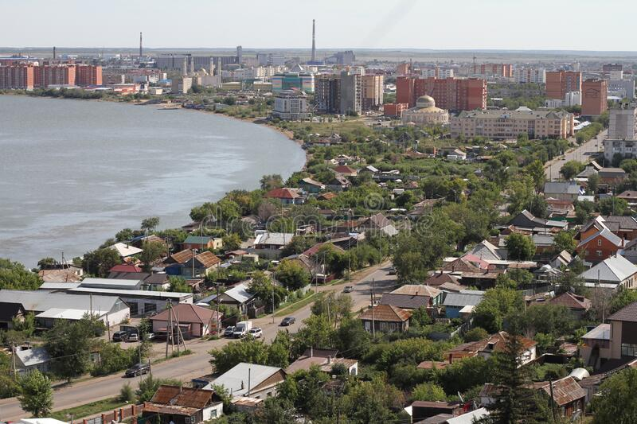
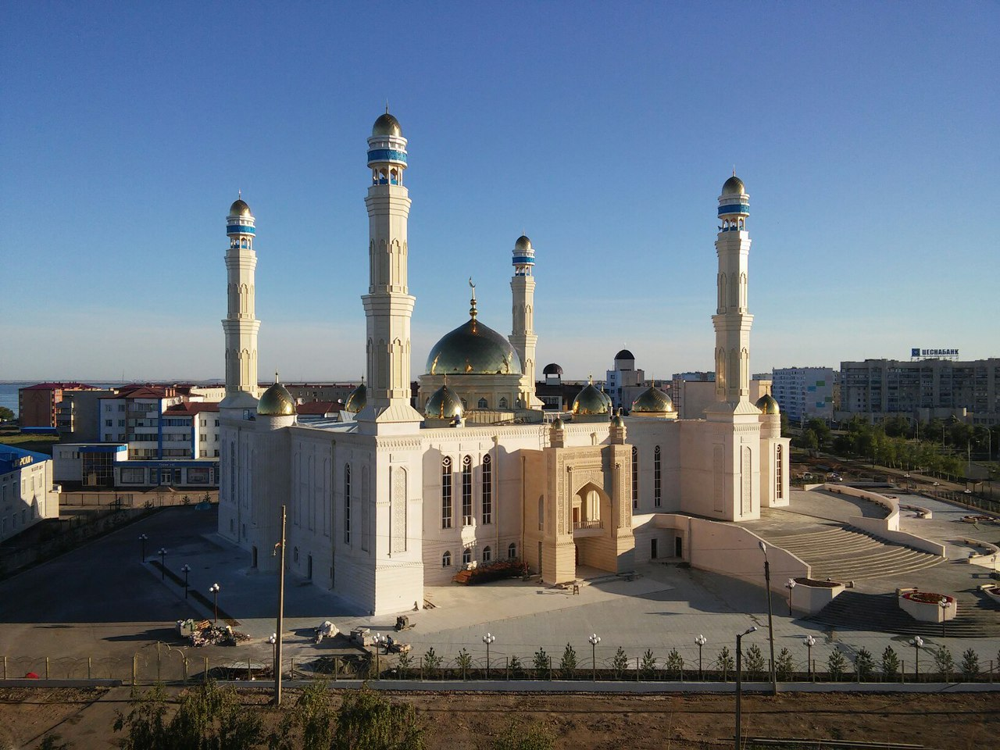
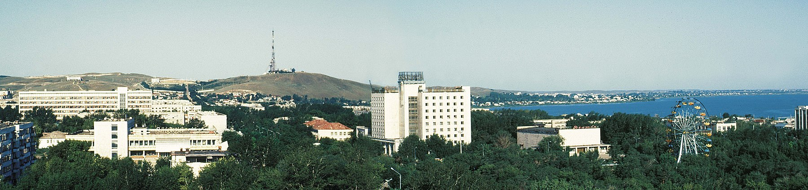

Kokshetau
Kokshetau is a city in northern Kazakhstan and the capital of Akmola Region, which stretches along the southern shore of Lake Kopa, lying in the north of Kokshetau Hills, a northern subsystem of the Kokshetau Uplands (Saryarka) and the southern edge of the Ishim Plain.It is named after the Mount Kokshe. Earlier, it was the administrative center of Kokshetau Region, which was abolished in 1997. It is also situated at the junction of the Trans-Kazakhstan and South Siberian railways. Kokshetau lies at an elevation of approximately 234 m (768 ft) above sea level.

Names and etymology
The name Kokshetau (Kazakh: Kökşetau; pronounced [køkɕetɑw]) is of Kazakh origin literally meaning a (lit. 'smoky-blue mountain'), kokshe / "көкше", meaning (lit. 'blueish') and tau / "тау", meaning (lit. 'mountain') — the name of always turning blue, as if in a deep haze of mountains, thus "Blueish Mountain/Smoky-Blue Mountain" in English. That is how from ancient times Kazakhs were calling the highest mountain in Akmola Region "Mount Kokshe" (947 m), located 60 miles away from the city.
Chronology of name changes
Historically, several names in various languages have identified Kokshetau.
Stanitsa Kokchetavskaya (1827–1868; which is a romanized back-transliteration from Russian name in Cyrillic: стани́ца Кокчетавская; Kazakh: Көкшетау бекінісі, lit. 'The village of Kokshetau')
Kokchetav (1868–1993; in publications dating from the Soviet period, the city name was occasionally spelled in English as "Kokchetav", which is a back-transliteration from post-revolution Russian name in Cyrillic: Кокчета́в, Russian name in Cyrillic script (1868-1918): Кокчѣтавъ; Kazakh name in Yañalif script (1929-1940): Kɵkşetau, Kazakh name in Cyrillic script (after 1940): Көкшетау)
Kokshetau (since 1993; which is a romanized back-transliteration from Russian name in Cyrillic: Кокшета́у; Kazakh name in Cyrillic script: Көкшетау, Kazakh name in Latin script (new version before 2021): Kókshetaý, Kazakh name in Latin script (latest version of the Kazakh Latin alphabet after 2021): Kökşetau)

Physical geography and geology
Kokshetau is located in the country of Kazakhstan and lies in the northern portion of Akmola Region. The city is located on the border of the West Siberian Plain, on the southeastern shore of Lake Kopa, at an altitude of 234 meters above sea level, in the Kokshetau Mountains, north part of the Kokshetau Hills, the foothills of which surround the city from the south and west. It is located at 53°17′0″N 69°23′0″E (52.2833, 69.3833) and covers an area of 234 km2 (90 sq mi). It is located about 300 kilometres (190 mi) north-west of the national capital of Astana.

About Kokshetau